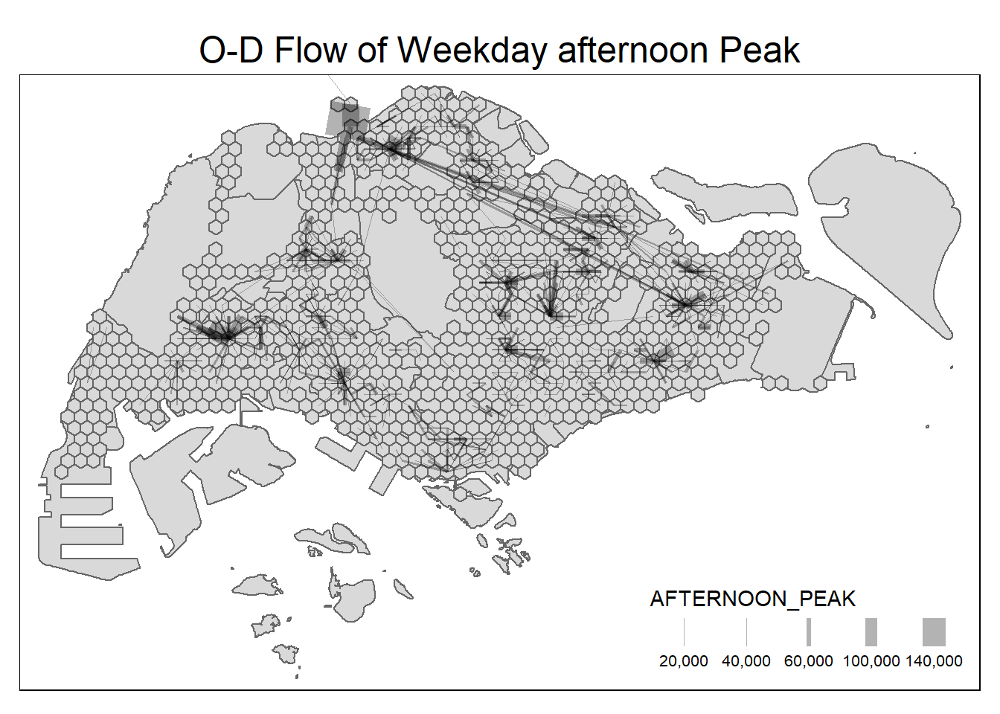

pacman::p_load(sf, sfdep, spdep, tmap, tidyverse, knitr, dplyr, readr, DT, stplanr, performance, ggpubr)Take-home Exercise 2: Applied Spatial Interaction Models: A case study of Singapore public bus commuter flows
1 Background
Urban commuters wake up early for work, facing challenges that transport operators and urban managers must understand. Traditional surveys, costly and outdated, are being replaced by digital data from GPS and smart cards. This data, while abundant, is underutilized by planners, affecting the return on investment in urban infrastructure. Thus, efficient data strategies are needed to better understand and improve urban commuting.
2 Motivation and Objective
This take-home exercise is motivated by two main reasons. Firstly, despite increasing amounts of open data available for public consumption, there has not been significant practice research carried out to show how these disparate data sources can be integrated, analysed, and modelled to support policy making decisions.
Secondly, there is a general lack of practical research to show how geospatial data science and analysis (GDSA) can be used to support decision-making.
Hence, the task for this take-home exercise is to conduct a case study to demonstrate the potential value of GDSA to integrate publicly available data from multiple sources for building a spatial interaction models to determine factors affecting urban mobility patterns of public bus transit.
3 The Task
The specific tasks of this take-home exercise are as follows:
Geospatial Data Science
Derive an analytical hexagon data of 375m (this distance is the perpendicular distance between the centre of the hexagon and its edges) to represent the traffic analysis zone (TAZ).
With reference to the time intervals provided in the table below, construct an O-D matrix of commuter flows for a time interval of your choice by integrating Passenger Volume by Origin Destination Bus Stops and Bus Stop Location from LTA DataMall. The O-D matrix must be aggregated at the analytics hexagon level
Peak hour period Bus tap on time Weekday morning peak 6am to 9am Weekday afternoon peak 5pm to 8pm Weekend/holiday morning peak 11am to 2pm Weekend/holiday evening peak 4pm to 7pm Display the O-D flows of the passenger trips by using appropriate geovisualisation methods (not more than 5 maps).
Describe the spatial patterns revealed by the geovisualisation (not more than 100 words per visual).
Assemble at least three propulsive and three attractiveness variables by using aspatial and geospatial from publicly available sources.
Compute a distance matrix by using the analytical hexagon data derived earlier.
Spatial Interaction Modelling
Calibrate spatial interactive models to determine factors affecting urban commuting flows at the selected time interval.
Present the modelling results by using appropriate geovisualisation and graphical visualisation methods. (Not more than 5 visuals)
With reference to the Spatial Interaction Model output tables, maps and data visualisation prepared, describe the modelling results. (not more than 100 words per visual).
4 Getting Started
4.1 Loading R packages
The code chunk below installs and loads the packages will be used into R environment.
4.2 The data
4.2.1 Open Government Data
Data from several open government sources will be used:
Passenger Volume by Origin Destination Bus Stops, Bus Stop Location, Train Station and Train Station Exit Point, just to name a few of them, from LTA DataMall.
Master Plan 2019 Subzone Boundary, HDB Property Information, School Directory and Information and other relevant data from Data.gov.sg.
4.2.2 Specially collected data
Business, entertn, F&B, FinServ, Leisure&Recreation and Retails are geospatial data sets of the locations of business establishments, entertainments, food and beverage outlets, financial centres, leisure and recreation centres, retail and services stores/outlets.
HDB: This data set is the geocoded version of HDB Property Information data from data.gov. The data set is prepared using September 2021 data. If you want to prepare you own data by using the latest HDB Property Information provided on data.gov.sg, this link provides a useful step-by-step guide.
5 Processing and Visualising Flow Data
5.1 Preparing the Flow Data
5.1.1 Importing the OD data
Firstly, we will import the Passenger Volume by Origin Destination Bus Stops data set downloaded from LTA DataMall by using read_csv() of readr package.
odbus <- read_csv("data/aspatial/origin_destination_bus_202308.csv")Then, we use glimpse() to check of odbus tibble data frame.
glimpse(odbus)Rows: 5,709,512
Columns: 7
$ YEAR_MONTH <chr> "2023-08", "2023-08", "2023-08", "2023-08", "2023-…
$ DAY_TYPE <chr> "WEEKDAY", "WEEKENDS/HOLIDAY", "WEEKENDS/HOLIDAY",…
$ TIME_PER_HOUR <dbl> 16, 16, 14, 14, 17, 17, 17, 17, 7, 17, 14, 10, 10,…
$ PT_TYPE <chr> "BUS", "BUS", "BUS", "BUS", "BUS", "BUS", "BUS", "…
$ ORIGIN_PT_CODE <chr> "04168", "04168", "80119", "80119", "44069", "4406…
$ DESTINATION_PT_CODE <chr> "10051", "10051", "90079", "90079", "17229", "1722…
$ TOTAL_TRIPS <dbl> 7, 2, 3, 10, 5, 4, 3, 22, 3, 3, 7, 1, 3, 1, 3, 1, …We can see that column ORIGIN_PT_CODE and DESTINATION_PT_CODE are in chr data type. For further processing, we should convert these data values into factor data type.
odbus$ORIGIN_PT_CODE <- as.factor(odbus$ORIGIN_PT_CODE)
odbus$DESTINATION_PT_CODE <- as.factor(odbus$DESTINATION_PT_CODE) Notice that both of them are in factor data type now.
glimpse(odbus)Rows: 5,709,512
Columns: 7
$ YEAR_MONTH <chr> "2023-08", "2023-08", "2023-08", "2023-08", "2023-…
$ DAY_TYPE <chr> "WEEKDAY", "WEEKENDS/HOLIDAY", "WEEKENDS/HOLIDAY",…
$ TIME_PER_HOUR <dbl> 16, 16, 14, 14, 17, 17, 17, 17, 7, 17, 14, 10, 10,…
$ PT_TYPE <chr> "BUS", "BUS", "BUS", "BUS", "BUS", "BUS", "BUS", "…
$ ORIGIN_PT_CODE <fct> 04168, 04168, 80119, 80119, 44069, 44069, 20281, 2…
$ DESTINATION_PT_CODE <fct> 10051, 10051, 90079, 90079, 17229, 17229, 20141, 2…
$ TOTAL_TRIPS <dbl> 7, 2, 3, 10, 5, 4, 3, 22, 3, 3, 7, 1, 3, 1, 3, 1, …5.1.2 Extracting the study data
For the purpose of this exercise, we will extract commuting flows on weekday and between 6 and 9 o’clock(namely, the weekday morning peak).
odbus6_9 <- odbus %>%
filter(DAY_TYPE == "WEEKDAY") %>%
filter(TIME_PER_HOUR >= 6 &
TIME_PER_HOUR <= 9) %>%
group_by(ORIGIN_PT_CODE,
DESTINATION_PT_CODE) %>%
summarise(TRIPS = sum(TOTAL_TRIPS))5.2 Working with Geospatial Data
5.2.1 Importing the geospatial data
According to epsg.io, Singapore’s coordinate system is SVY21 with EPSG 3414. So we need to re-assign EPSG to 3414 by using st_transform().
busstop <- st_read(dsn = "data/geospatial",
layer = "BusStop") %>%
st_transform(crs = 3414)Reading layer `BusStop' from data source
`C:\Stella12121\ISSS624\Take-home_Ex2\data\geospatial' using driver `ESRI Shapefile'
Simple feature collection with 5161 features and 3 fields
Geometry type: POINT
Dimension: XY
Bounding box: xmin: 3970.122 ymin: 26482.1 xmax: 48284.56 ymax: 52983.82
Projected CRS: SVY21Rename the column ‘BUS_STOP_N’ to ‘ORIGIN_PT_CODE’ for easier join with odbus dataset.
busstop <- busstop %>% rename(ORIGIN_PT_CODE = BUS_STOP_N)Next, we will import mpsz data
mpsz <- st_read(dsn = "data/geospatial", layer = "MPSZ-2019") %>%
st_transform(crs = 3414)Reading layer `MPSZ-2019' from data source
`C:\Stella12121\ISSS624\Take-home_Ex2\data\geospatial' using driver `ESRI Shapefile'
Simple feature collection with 332 features and 6 fields
Geometry type: MULTIPOLYGON
Dimension: XY
Bounding box: xmin: 103.6057 ymin: 1.158699 xmax: 104.0885 ymax: 1.470775
Geodetic CRS: WGS 845.3 Geospatial data wrangling
5.3.1 Combining busstop and hexagon layer
First, using st_make_grid() to create the hexagon layer.
area_honeycomb_grid = st_make_grid(busstop, cellsize = 750, what = "polygons", square = FALSE)
# To sf and add grid ID
honeycomb_grid_sf = st_sf(area_honeycomb_grid) %>%
# add grid ID
mutate(grid_id = 1:length(lengths(area_honeycomb_grid)))
honeycomb_grid_sf$num_bus = lengths(st_intersects(honeycomb_grid_sf, busstop))
bus_count_hex = filter(honeycomb_grid_sf, num_bus > 0)Second, we populate the grid_id of honeycomb_grid_sf sf data frame into busstop sf data frame.
busstop_grid <- st_intersection(busstop, honeycomb_grid_sf) %>%
select(ORIGIN_PT_CODE, grid_id) %>%
st_drop_geometry()
Note
st_intersection()is used to perform point and polygon overly and the output will be in point sf object.select()of dplyr package is then use to retain only ORIGIN_PT_CODE and grid_id in the busstop_grid sf data frame.
5.3.2 Constructing OD matrix
Third, we are going to append the grid_id from busstop_grid data frame onto odbus6_9 data frame.
od_data <- left_join(odbus6_9, busstop_grid,
by = "ORIGIN_PT_CODE" ) %>%
rename(ORIGIN_BS = ORIGIN_PT_CODE,
ORIGIN_SZ = grid_id,
DESTIN_BS = DESTINATION_PT_CODE)Before continue, it is good for us to check for duplicating records.
duplicate <- od_data %>%
group_by_all() %>%
filter(n()>1) %>%
ungroup()Since there are duplicates in the dataset, the code chunk below will be used to retain the unique records.
od_data <- unique(od_data)Next, we will update od_data data frame with the hexagon layer.
od_data <- left_join(od_data , busstop_grid,
by = c("DESTIN_BS" = "ORIGIN_PT_CODE")) duplicate <- od_data %>%
group_by_all() %>%
filter(n()>1) %>%
ungroup()od_data <- unique(od_data)od_data <- od_data %>%
rename(DESTIN_SZ = grid_id) %>%
drop_na() %>%
group_by(ORIGIN_SZ, DESTIN_SZ) %>%
summarise(MORNING_PEAK = sum(TRIPS))od_data = filter(od_data, MORNING_PEAK > 0)5.4 Visualising Spatial Interaction
In this section, we will learn how to prepare a desire line by using stplanr package.
5.4.1 Removing intra-zonal flows
We will not plot the intra-zonal flows. The code chunk below will be used to remove intra-zonal flows.
od_data1 <- od_data[od_data$ORIGIN_SZ!=od_data$DESTIN_SZ,]5.4.2 Creating desire lines
In this code chunk below, od2line() of stplanr package is used to create the desire lines.
flowLine <- od2line(flow = od_data1,
zones = honeycomb_grid_sf,
zone_code = "grid_id")5.4.3 Visualising the desire lines
To visualise the resulting desire lines, the code chunk below is used. When the flow data are very messy and highly skewed, it is wiser to focus on selected flows, for example flow greater than or equal to 5000 as shown below.
Show the code
tmap_mode("plot")
tmap_options(check.and.fix = TRUE)
tm_shape(mpsz) +
tm_polygons() +
tm_shape(bus_count_hex) +
tm_polygons() +
flowLine %>%
filter(MORNING_PEAK >= 5000) %>%
tm_shape() +
tm_lines(lwd = "MORNING_PEAK",
style = "quantile",
scale = c(0.3, 3, 7, 11, 15, 19, 23, 27),
n = 6,
alpha = 0.3) +
tm_layout(main.title = 'O-D Flow of Weekday Morning Peak' ,
main.title.position = "center")
In this flow map, thicker line means more trips between the two hexagons. From above, we can observe that passenger flows between Woodlands(north region) and Tampines(east region) are much more compared to other regions. And we also notice that there is almost no passenger flow in the central area.
6 Assemble propulsive and attractiveness variables
In this section, we will try to find out the factors affecting the passenger flows of bus during weekday morning peak.
6.1 Constructing distance matrix
In spatial interaction, a distance matrix is a table that shows the distance between pairs of locations.
Since using sf function took relatively longer time that sp method especially the data set is large, we will use sp method in the code chunks below.
bus_count_hex_sp <- as(bus_count_hex, "Spatial")Next, spDists() of sp package will be used to compute the Euclidean distance between the centroids of the hexagons.
dist <- sp::spDists(bus_count_hex_sp,
longlat = FALSE)
head(dist, n=c(6, 6)) [,1] [,2] [,3] [,4] [,5] [,6]
[1,] 0.000 750.000 3269.174 1500.000 2704.163 3968.627
[2,] 750.000 0.000 2598.076 750.000 1984.313 3269.174
[3,] 3269.174 2598.076 0.000 1984.313 750.000 750.000
[4,] 1500.000 750.000 1984.313 0.000 1299.038 2598.076
[5,] 2704.163 1984.313 750.000 1299.038 0.000 1299.038
[6,] 3968.627 3269.174 750.000 2598.076 1299.038 0.000Then, we will create a list sorted according to the the distance matrix by grid_id.
grid_id_names <- bus_count_hex$grid_idNext we will use paste0() to attach grid_id to row and column for distance matrix matching ahead.
colnames(dist) <- paste0(grid_id_names)
rownames(dist) <- paste0(grid_id_names)Next, we will pivot the distance matrix into a long table by using the row and column grid_id as show in the code chunk below.
distPair <- reshape2::melt(dist) %>%
rename(dist = value)
head(distPair, 10) Var1 Var2 dist
1 23 23 0.000
2 44 23 750.000
3 46 23 3269.174
4 66 23 1500.000
5 67 23 2704.163
6 68 23 3968.627
7 86 23 1299.038
8 87 23 2250.000
9 88 23 3436.932
10 89 23 4683.748Then we are going to append a constant value to replace the intra-zonal distance of 0.
First, we will select and find out the minimum value of the distance by using summary().
distPair %>%
filter(dist > 0) %>%
summary() Var1 Var2 dist
Min. : 23 Min. : 23 Min. : 750
1st Qu.: 871 1st Qu.: 871 1st Qu.: 8352
Median :1324 Median :1324 Median :13332
Mean :1269 Mean :1269 Mean :14162
3rd Qu.:1688 3rd Qu.:1688 3rd Qu.:18929
Max. :2505 Max. :2505 Max. :44680 Second, a constant distance value of 300m is added into intra-zones distance.
distPair$dist <- ifelse(distPair$dist == 0,
300, distPair$dist)The code chunk below is used to rename the origin and destination fields.
distPair <- distPair %>%
rename(ORIGIN_SZ = Var1, #ORIGIN_GRID_ID
DESTIN_SZ = Var2) #DESTIN_GRID_ID
distPair %>% head() ORIGIN_SZ DESTIN_SZ dist
1 23 23 300.000
2 44 23 750.000
3 46 23 3269.174
4 66 23 1500.000
5 67 23 2704.163
6 68 23 3968.6276.2 Preparing flow data
First, we set ORIGIN_SZ and DESTIN_SZ to factor data type.
distPair <- distPair %>%
mutate(
ORIGIN_SZ = as.factor(ORIGIN_SZ),
DESTIN_SZ = as.factor(DESTIN_SZ)
)Next, we will compute the total passenger trip between and within planning subzones by using the code chunk below. The output is all flow_data.
flow_data <- od_data %>%
group_by(ORIGIN_SZ, DESTIN_SZ) %>%
summarize(TRIPS = sum(MORNING_PEAK)) 6.2.1 Separating intra-flow from passenger volume df
Code chunk below is used to add three new fields in flow_data dataframe.
flow_data$FlowNoIntra <- ifelse(
flow_data$ORIGIN_SZ == flow_data$DESTIN_SZ,
0, flow_data$TRIPS)
flow_data$offset <- ifelse(
flow_data$ORIGIN_SZ == flow_data$DESTIN_SZ,
0.000001, 1)6.2.2 Combining passenger volume data with distance value
Before we can join flow_data and distPair, we need to convert data value type of ORIGIN_SZ and DESTIN_SZ fields of flow_data dataframe into factor data type.
flow_data$ORIGIN_SZ <- as.factor(flow_data$ORIGIN_SZ)
flow_data$DESTIN_SZ <- as.factor(flow_data$DESTIN_SZ)Now, left_join() of dplyr will be used to flow_data dataframe and distPair dataframe. The output is called flow_data1.
flow_data1 <- flow_data %>%
left_join (distPair,
by = c("ORIGIN_SZ" = "ORIGIN_SZ",
"DESTIN_SZ" = "DESTIN_SZ"))6.3 preparing propulsive and attractiveness variables
First, let us learn about the definition of the two variables.
The definition
- propulsive factors: These are factors that “push” or propel people to leave a certain area or point of origin.They often relate to characteristics of the departure area that make people want to or need to leave, such as employment opportunities, residential density, or the availability of services and amenities.
- attractiveness factors: The factors that “pull” or attract people to a destination.These are typically features or characteristics of an area that draw people in, such as shopping centers, tourist attractions, educational institutions, or recreational facilities.
We will use Business, Schools and hdb datasets to derive propulsive factors; entern , F&B and Liesure&Recreation datasets to derive attractiveness factors.
- Business: locations of business establishments
- Schools: the information of schools including the location
- hdb: a geocoded version of HDB Property Information data from data.gov.
- entern: entertainments
- F&B: food and beverage outlets
- Leisure&Recreation: the information about leisure and recreation centres
Next, we are going to import those datasets.
business <- st_read(dsn = "data/geospatial",
layer = "Business") %>%
st_transform(crs = 3414)Reading layer `Business' from data source
`C:\Stella12121\ISSS624\Take-home_Ex2\data\geospatial' using driver `ESRI Shapefile'
Simple feature collection with 6550 features and 3 fields
Geometry type: POINT
Dimension: XY
Bounding box: xmin: 3669.148 ymin: 25408.41 xmax: 47034.83 ymax: 50148.54
Projected CRS: SVY21 / Singapore TMThen we will look at the distribution of business attribute.
tmap_options(check.and.fix = TRUE)
tm_shape(mpsz) +
tm_polygons() +
tm_shape(bus_count_hex) +
tm_polygons() +
tm_shape(business) +
tm_dots()bus_count_hex$`BUSINESS_COUNT`<- lengths(
st_intersects(
bus_count_hex, business))summary(bus_count_hex$BUSINESS_COUNT) Min. 1st Qu. Median Mean 3rd Qu. Max.
0.000 0.000 1.000 7.273 7.000 97.000 We will only keep those required variables and rename some columns.
schools <- read_csv("data/aspatial/schools.csv") %>%
rename(latitude = "results.LATITUDE",
longitude = "results.LONGITUDE")%>%
select(postal_code, school_name, latitude, longitude)Then, convert the dataset into simple feature.
schools_sf <- st_as_sf(schools,
coords = c("longitude", "latitude"),
crs=4326) %>%
st_transform(crs = 3414)Next we will plot the distribution of schools attribute.
tmap_options(check.and.fix = TRUE)
tm_shape(mpsz) +
tm_polygons() +
tm_shape(bus_count_hex) +
tm_polygons() +
tm_shape(schools_sf) +
tm_dots()bus_count_hex$`SCHOOL_COUNT`<- lengths(
st_intersects(
bus_count_hex, schools_sf))summary(bus_count_hex$`SCHOOL_COUNT`) Min. 1st Qu. Median Mean 3rd Qu. Max.
0.0000 0.0000 0.0000 0.4125 1.0000 4.0000 hdb <- read_csv("data/aspatial/hdb.csv")
hdb <- distinct(hdb)Next, convert the dataset into simple feature.
hdb_sf <- st_as_sf(hdb,
coords=c('lng', 'lat'),
crs=4326) %>%
st_transform(crs=3414)hdb_sf <- hdb_sf %>%
filter(residential == "Y")Then, we plot the distribution of HDB.
tmap_options(check.and.fix = TRUE)
tm_shape(mpsz) +
tm_polygons() +
tm_shape(bus_count_hex) +
tm_polygons() +
tm_shape(hdb_sf) +
tm_dots()
bus_count_hex$`HDB_COUNT`<- lengths(
st_intersects(
bus_count_hex, hdb_sf))summary(bus_count_hex$`HDB_COUNT`) Min. 1st Qu. Median Mean 3rd Qu. Max.
0.00 0.00 0.00 12.15 22.00 82.00